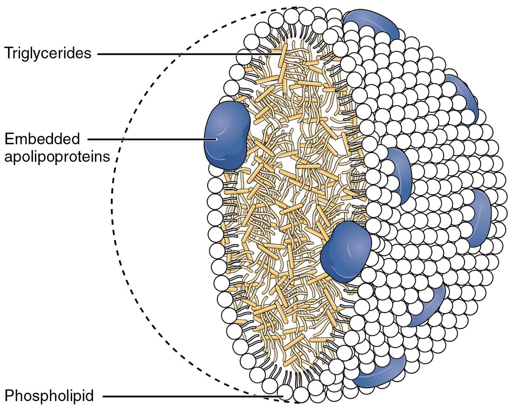

Lipid and protein metabolism
Lipolysis splits stored triglycerides into glycerol, which the liver can make into glucose, and fatty acids, which travel on albumin; epinephrine, cortisol and growth hormone switch it on and insulin switches it off.
Part 1 · Clinical hook
Why this matters
Jordan, 14, has lost 5 kg in a month, drinks water constantly, and has been vomiting since last night. In the emergency department he is breathing deeply and fast, and his breath smells like nail-polish remover. His blood glucose is 480 mg/dL, his blood pH is 7.12, and a urine strip turns dark purple for ketones. His pancreas has stopped making insulin, and without it, his fat is being burned faster than his body can handle the products.
Part 2 · Foundations
What this builds on
Part 3 · Prerequisite check
Quick check before you start
1. What is a triglyceride made of?
- One glycerol joined to three fatty acids
- Three glucose units in a chain
- One fatty acid joined to three glycerols
Show the answer
A triglyceride is one glycerol with three fatty acids attached by dehydration synthesis.
- Correct: One glycerol joined to three fatty acids:
- Three glucose units in a chain:
- One fatty acid joined to three glycerols:
2. Which step of glucose breakdown cannot run backward, so its product can never be turned into glucose?
- Glucose to glucose-6-phosphate
- Pyruvate to acetyl CoA
- Citrate to isocitrate
Show the answer
The enzyme complex that turns pyruvate into acetyl CoA works in one direction only, so carbon that reaches acetyl CoA cannot be made into glucose.
- Glucose to glucose-6-phosphate:
- Correct: Pyruvate to acetyl CoA:
- Citrate to isocitrate:
3. Which blood pH is acidosis?
- 7.40
- 7.45
- 7.20
Show the answer
Normal blood pH is 7.35 to 7.45. Below 7.35 is acidosis.
- 7.40:
- 7.45:
- Correct: 7.20:
Part 4 · Anatomy panel
Anatomy

With labels hidden, select a box to reveal its label.
Part 5 · Causal chain
How it works, step by step
- Insulin is almost absent, as in untreated type 1 diabetes, and glucagon is high.Nothing holds back lipolysis, so adipose tissue releases fatty acids into the blood at a high rate.
- The liver takes up the flood of fatty acids and runs beta oxidation at full speed.Acetyl CoA is made faster than the citric acid cycle can use it, especially as oxaloacetate is drawn off for gluconeogenesis.
- Acetyl CoA piles up in liver mitochondria.The liver turns it into ketone bodies (acetoacetate and beta-hydroxybutyrate) and releases them far faster than other tissues burn them.
- Ketone bodies are acids and give up their H+ in the blood.Bicarbonate is used up and blood pH falls: ketoacidosis, with deep rapid breathing and acetone on the breath.
Part 6 · Key ideas
Key ideas
- Lipogenesis (lip- = fat, -genesis = making) is the building of fatty acids and triglycerides. It runs mainly in the liver and adipose tissue when fuel is plentiful and insulin is high: acetyl CoA is built into 16-carbon fatty acids two carbons at a time, and three fatty acids are joined to glycerol.
- Lipoproteins are particles that carry triglycerides and cholesterol, which do not dissolve in water, in the blood: a core of these lipids inside a shell of phospholipids, free cholesterol and apolipoproteins. LDL (low-density lipoprotein) delivers cholesterol to cells, which take it in through LDL receptor proteins; a cell short of cholesterol makes more of them. High blood LDL drives plaque growth in artery walls.
- Transamination (trans- = across) moves the amino group from an amino acid onto a carbon skeleton from the citric acid cycle, alpha-ketoglutarate, which becomes the amino acid glutamate. The original amino acid is left as a keto acid. The enzymes, transaminases, need a coenzyme made from vitamin B6.
- The urea cycle is a loop of five reactions in liver cells that turns toxic ammonia into urea. Urea carries two nitrogens, one from ammonia and one from aspartate. It is small, water-soluble and far less toxic, so it travels in the blood to your kidneys and leaves in urine.
Part 7 · Core concept
Core concepts
Part 8 · Misconception
A common mistake
The wrong idea: When you run out of glucose, your body turns stored fat into glucose.
What actually happens: Only the small glycerol part of a triglyceride can become glucose. Fatty acids, which carry nearly all the energy in fat, are broken down to acetyl CoA, and the step from pyruvate to acetyl CoA cannot run backward. So the glucose made when glycogen runs out comes from glycerol, lactate and, above all, amino acids from muscle protein. Fat's contribution is indirect: fatty acids fuel most other tissues, and the liver makes ketone bodies that the brain can use, which spares glucose and protein.
Part 9 · Retrieval check
Check yourself
Anything you miss goes into your review queue.
1. Stearic acid has 18 carbons. Using 2.5 ATP per NADH, 1.5 per FADH2, 10 per acetyl CoA and an activation cost of 2 ATP, how much ATP does its complete oxidation yield?
- 90 ATP
- 106 ATP
- 120 ATP
- 122 ATP
Show the answer
18 carbons give 9 acetyl CoA in 8 turns. Beta oxidation: 8 FADH2 × 1.5 = 12 and 8 NADH × 2.5 = 20. Citric acid cycle: 9 × 10 = 90. Total 12 + 20 + 90 = 122, minus 2 for activation = 120 ATP.
- 90 ATP: 90 counts only the acetyl CoA passing through the citric acid cycle, leaving out the NADH and FADH2 made by beta oxidation itself.
- 106 ATP: 106 is the yield for 16-carbon palmitic acid. Stearic acid has one more turn and one more acetyl CoA.
- Correct: 120 ATP: Correct. 12 + 20 + 90 − 2 = 120 ATP.
- 122 ATP: 122 forgets the 2 ATP spent activating the fatty acid.
2. A 14-year-old with undiagnosed type 1 diabetes has had almost no insulin for several days. Predict the change in each variable, compared with a healthy teenager.
| Variable | Change |
|---|---|
| Lipolysis in adipose tissue | — |
| Ketone bodies in the blood | — |
| Blood bicarbonate | — |
| Blood pH | — |
| Depth and rate of breathing | — |
| Blood glucose | — |
Show the answer
Across the endocrine, metabolic and respiratory systems: no insulin means unchecked lipolysis and high glucagon, so the liver makes ketone bodies at its maximum rate. Their acid uses up bicarbonate and lowers pH, and the respiratory system responds with deep, fast breathing. Glucose is high at the same time because insulin-driven uptake has stopped.
- Lipolysis in adipose tissue: up. Insulin normally holds lipolysis back; with none, and with glucagon high, fatty acids pour out of fat cells.
- Ketone bodies in the blood: up. The liver's beta oxidation makes acetyl CoA faster than its citric acid cycle can use it, and it turns the excess into ketone bodies.
- Blood bicarbonate: down. Ketone bodies release H+, and bicarbonate is used up buffering it.
- Blood pH: down. Once buffering cannot keep up with the acid, pH falls below 7.35: ketoacidosis.
- Depth and rate of breathing: up. Low blood pH stimulates chemoreceptors, which drive deep, rapid breathing that blows off CO2.
- Blood glucose: up. Without insulin, muscle and fat take up little glucose, and the liver keeps releasing it.
3. A woman on a very low-carbohydrate diet has blood ketone bodies of 1.5 mmol/L and a blood pH of 7.40. A man with untreated type 1 diabetes has ketone bodies of 12 mmol/L and a pH of 7.15. What best explains the difference?
- She makes a different ketone body that does not act as an acid
- Her insulin still limits fat release, so production stays low
- His kidneys have stopped excreting ketone bodies into the urine
- Her liver cannot make ketone bodies once her blood glucose is low
Show the answer
Both are making ketone bodies, the same acids. She still has insulin, which limits fat release, so ketone levels stay low enough for tissues to burn them and buffers to absorb their H+: ketosis. He has almost no insulin, so production runs far ahead of use and his pH falls: ketoacidosis.
- She makes a different ketone body that does not act as an acid: Ketosis and ketoacidosis involve the same ketone bodies, all acids; the difference is how much is made.
- Correct: Her insulin still limits fat release, so production stays low: Correct. Insulin is the brake that keeps ketosis from becoming ketoacidosis.
- His kidneys have stopped excreting ketone bodies into the urine: His kidneys are excreting large amounts of ketone bodies; the problem is production far above what can be cleared.
- Her liver cannot make ketone bodies once her blood glucose is low: Her liver is making ketone bodies, which is why her level is raised at all.
4. A statin blocks HMG CoA reductase in liver cells. Why does the LDL level in the blood fall?
- Liver cells short of cholesterol make more LDL receptor proteins
- The liver makes fewer LDL receptor proteins, so LDL leaves the blood
- The drug binds LDL particles and speeds their breakdown in the blood
- Less cholesterol is absorbed from food into the blood
Show the answer
Blocking HMG CoA reductase cuts cholesterol synthesis in liver cells. Short of cholesterol, the cells make more LDL receptor proteins, pull more LDL out of the blood by receptor-mediated endocytosis, and the blood level falls.
- Correct: Liver cells short of cholesterol make more LDL receptor proteins: Correct. The liver makes up for lost synthesis by taking cholesterol from the blood.
- The liver makes fewer LDL receptor proteins, so LDL leaves the blood: Fewer LDL receptor proteins would leave more LDL in the blood, not less.
- The drug binds LDL particles and speeds their breakdown in the blood: Statins act on an enzyme inside liver cells, not on LDL particles in the blood.
- Less cholesterol is absorbed from food into the blood: Statins block synthesis inside cells; they do not mainly change absorption from the gut.
5. Put the steps in order to follow stored fat to ATP in a working muscle.
- Lipolysis in adipose tissue releases fatty acids into the blood
- Fatty acids travel bound to albumin and enter the muscle cell
- Carnitine carries the activated fatty acid into the mitochondrion
- Beta oxidation cuts the chain into acetyl CoA, making FADH2 and NADH
- Acetyl CoA enters the citric acid cycle
- NADH and FADH2 drive the electron transport chain and ATP synthase
Show the answer
Fat is released by lipolysis, carried on albumin, activated and carried into mitochondria on carnitine, cut into acetyl CoA by beta oxidation, and oxidized in the citric acid cycle; the carriers from both drive oxidative phosphorylation.
- Correct order: 1. Lipolysis in adipose tissue releases fatty acids into the blood 2. Fatty acids travel bound to albumin and enter the muscle cell 3. Carnitine carries the activated fatty acid into the mitochondrion 4. Beta oxidation cuts the chain into acetyl CoA, making FADH2 and NADH 5. Acetyl CoA enters the citric acid cycle 6. NADH and FADH2 drive the electron transport chain and ATP synthase
6. A student outlined how the body disposes of amino acid nitrogen. One step is wrong. Which one?
- Amino groups are collected onto glutamate by transamination
- Glutamate is deaminated in the liver, releasing ammonia
- The kidneys run the urea cycle, turning ammonia into urea
- Urea carries two nitrogen atoms and is far less toxic than ammonia
- Urea leaves the body in the urine
Show the answer
The urea cycle runs in the liver, partly in its mitochondria and partly in its cytosol. The kidneys excrete the urea the liver makes; they do not make it.
- Amino groups are collected onto glutamate by transamination: This step is right. Transaminases pass amino groups to alpha-ketoglutarate, making glutamate.
- Glutamate is deaminated in the liver, releasing ammonia: This step is right. Deamination in liver mitochondria releases ammonia.
- Correct: The kidneys run the urea cycle, turning ammonia into urea: This is the error. The liver, not the kidneys, runs the urea cycle.
- Urea carries two nitrogen atoms and is far less toxic than ammonia: This step is right. One nitrogen comes from ammonia and one from aspartate.
- Urea leaves the body in the urine: This step is right. The kidneys excrete urea.
7. Which part of a stored triglyceride can the liver turn into glucose?
- All three fatty acids
- Both the glycerol and the fatty acids
- Neither part
- Only the glycerol backbone
Show the answer
Glycerol enters gluconeogenesis as a three-carbon sugar phosphate. Fatty acids are broken down to acetyl CoA, which cannot become pyruvate, so they cannot be made into glucose.
- All three fatty acids: Fatty acids end as acetyl CoA, which cannot be turned back into pyruvate or glucose.
- Both the glycerol and the fatty acids: Only glycerol can; fatty acids cannot.
- Neither part: Glycerol from stored fat is a real, if small, source of new glucose.
- Correct: Only the glycerol backbone: Correct. Glycerol is the only part of a triglyceride that can become glucose.
Part 10 · Summary
Summary
Lipolysis splits stored triglycerides into glycerol, which the liver can make into glucose, and fatty acids, which travel on albumin; epinephrine, cortisol and growth hormone switch it on and insulin switches it off. Beta oxidation in mitochondria cuts fatty acids into acetyl CoA two carbons at a time, making FADH2 and NADH each turn; a 16-carbon fatty acid yields about 106 ATP, and fat can be burned only with oxygen. When acetyl CoA piles up in the liver, ketogenesis turns it into ketone bodies (acetoacetate, beta-hydroxybutyrate and a little acetone) that heart, muscle and, after a few days, brain can burn. Ketosis is normal; ketoacidosis, from nearly absent insulin, acidifies the blood. Lipogenesis builds fatty acids from acetyl CoA when insulin is high. Lipoproteins carry lipids in blood: chylomicrons and VLDL deliver triglycerides through lipoprotein lipase, LDL delivers cholesterol and causes atherosclerosis, and HDL returns cholesterol to the liver. Amino acids lose their nitrogen by transamination and deamination; the toxic ammonia is made into urea by the urea cycle in the liver and excreted by the kidneys. Glucogenic amino acids can become glucose; fatty acids and ketogenic amino acids cannot.
Part 11 · Up next
What comes next
Part 12 · Connections